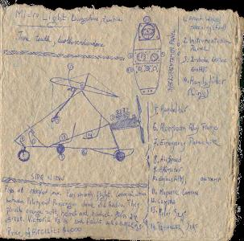

|
|
|
|
We woke up at 5.30. We drove down to Marimba, just across the border in Zambia, to fly the Mircolight.I liked the Microlight experience. They are two seters: pilot and passenger. When I went up, the pilot showed me the falls from above, then he told me he was going to do some dives. so he did one. I got really scared. So he said "OK, don't worry, we wont do any of those any more". But I insisted that I wanted to do another one, since I was first getting used to them. So we did, and this time it was GREAT! I loved it. I was able to enjoy the dive fully and wanted him to do more, but he didn't. From there on, we looked at some animals, basically doing a Microlight safari. That was OK, but what I really wanted to do was more diving and playing with the aircraft. Oh well, I didn't push it enough, so he didn't do it. Other people, with the same pilot did a lot more of those.
|  |
After everyone was done with the flying (and those who first didn't register for it they still did the 15 minutes flight instead of the 30mins. and they also did the helicopter ride...) we went to this other crazy expensive hotel with beautiful art, great pillows. It made me think of how cool it is to have so much man power for so cheap: you can make all these costum made objects, like all the furniture was hand made, and even little wooden things that would hold worchestershire sauce and tabasco and tomato sauce and mayo ro something, with the wholes that were exactly the samesize of the bottles themselves. Wow, what a hotel. Aneesh said the grand opening hadn't evenhappened yet. The hotel was called Zmabezi Sun, which is a chain of South African Hotels.

|
Now we are in the bus heading towards home, that is Aneeshes home, the real kingdom, since Aneesh got elected king of the Vengans...
{kind=link}